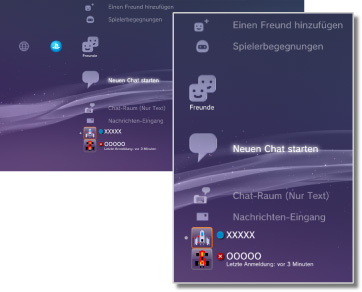

Freunde > Freunde-Kategorie
Freunde-Kategorie
Sie müssen eventuell die System-Software aktualisieren, bevor Sie diese Funktion verwenden können.
Sie können Nachrichten senden oder empfangen oder einen Chat mit anderen PS3™-Benutzern über PSNSM abhalten. Für diese Funktionen müssen Sie ein Sony Entertainment Network-Konto erstellen (sich anmelden). Die folgenden Icons werden unter  (Freunde) angezeigt. Welche Icons angezeigt werden, hängt von den Nutzungsbedingungen ab.
(Freunde) angezeigt. Welche Icons angezeigt werden, hängt von den Nutzungsbedingungen ab.

 |
Blockierliste | Anzeigen der Personen in Ihrer Blockierliste. |
|---|---|---|
 |
Einen Freund hinzufügen | Senden einer Anfrage, eine Person zu Ihrer Liste der Freunde hinzuzufügen. |
 |
Spielerbegegnungen | Anzeigen einer Liste mit Personen, mit denen Sie Online-Spiele im PlayStation®3-Format* gespielt haben. Wenn Sie dieses Icon auswählen, können Sie eine Nachricht zu einem Spieler senden oder das Hinzufügen eines Freundes anfragen. |
 |
Neuen Chat starten | Starten eines Chats. |
 |
Chat-Raum (Nur Text) | Dieses Icon wird angezeigt, wenn ein Chat-Raum für Text-Chats vorhanden ist. Wenn ein neuer Chat-Raum hinzugefügt wird, erscheint  . . |
 |
Sprach-Chat/Video-Chat-Raum | Dieses Icon wird während eines Sprach-/Video-Chats angezeigt. |
 |
Nachrichten-Eingang | Erstellen neuer Nachrichten und Anzeigen der empfangenen und gesendeten Nachrichten. |
 |
(Ihre Online-ID) | Der Avatar, den Sie für Ihr Konto auswählen, wird hier angezeigt. |
|
(Name eines Freundes) | Dieses Icon kennzeichnet eine Person in der Liste Ihrer Freunde. Sie können Nachrichten senden und empfangen oder mit Freunden chatten, indem Sie dieses Icon auswählen. |
| * |
Diese Funktion wird nicht von allen Spielen unterstützt. |
|---|
Anmerkungen
- Im PS3™-System werden Benutzer, die sich in der Liste Ihrer Freunde befinden, als „Freunde“ bezeichnet. E-Mails, die Sie unter (Freunde) senden oder empfangen, werden als „Nachrichten“ bezeichnet.
- Bis zu 2.000 Freunde können hinzugefügt werden.
- Bis zu 100 Freunde werden angezeigt.
- Bei mehr als 100 Freunden müssen Sie sich ab- und wieder anmelden, um die angezeigten Freunde zu aktualisieren. Melden Sie sich dabei auch bei allen anderen Geräten ab, mit denen Sie am PSNSM angemeldet sind.
- Sie können Freunde auch über Geräte wie PS4™-Systeme, PS Vita-Systeme, Smartphones oder andere Geräte mit installierter PlayStation®App verwalten.
- Bis zu 50 Spieler können unter
 (Spielerbegegnungen) angezeigt werden. Sobald dieser Grenzwert erreicht ist, wird der älteste Eintrag jedes Mal automatisch gelöscht, wenn ein neuer Spieler hinzugefügt wird.
(Spielerbegegnungen) angezeigt werden. Sobald dieser Grenzwert erreicht ist, wird der älteste Eintrag jedes Mal automatisch gelöscht, wenn ein neuer Spieler hinzugefügt wird. - Für einen Sprach-Chat benötigen Sie ein Audio-Ein-/-Ausgangsgerät (z. B. ein Headset, separat erhältlich). Für einen Video-Chat benötigen Sie außerdem eine USB-Kamera (separat erhältlich).
- Sie können kompatible USB-Headsets / Bluetooth®-Headsets / USB-Kameras (EyeToy™) / PlayStation®Eye / UVC (USB Video Class) kompatible USB-Kameras mit dem PS3™-System verwenden.
- Wenn Sie eine USB-Kamera über einen USB-Hub anschließen, verwenden Sie einen Hub, der USB 2.0 unterstützt. Bei einem Hub, der USB 2.0 nicht unterstützt, kann es zu einer Verschlechterung der Bildqualität kommen oder das Bild wird gar nicht angezeigt.
- Informationen zu unterstützten Peripheriegeräten und Anweisungen zum Gebrauch erhalten Sie bei dem Händler, der die Peripheriegeräte anbietet.